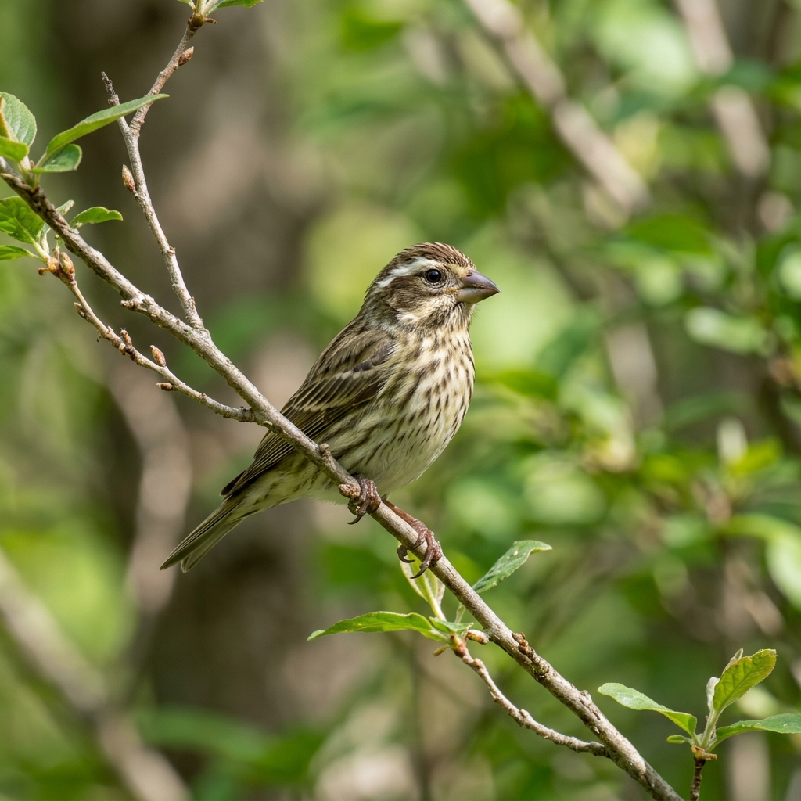

Here are 12 native and common birds found in the Montclair, NJ area, along with their calls:

A bright red bird common in gardens and woodlands. Known for its clear, whistling song.
A large, noisy songbird with a prominent crest and blue, white, and black plumage.
A medium-sized slate gray songbird named for its cat-like mewing call.
A large bird of prey common along highways and fields, known for its raspy, down-sweeping scream.
A medium-sized forest hawk that feeds on smaller birds, known for its rapid cackling call.
A migratory songbird with a warm orange breast, known for its cheerful, lilting song.
A tiny, active bird with a black cap and bib, famous for its "chick-a-dee-dee" and whistling calls.
A small gray bird with a crested head and large dark eyes, known for its clear "peter-peter" whistle.
A slender, graceful dove with a low, mournful cooing call.
A small, streaked brown sparrow with a complex, melodious song starting with clear whistles.
A small black-and-white woodpecker common at feeders, known for its high-pitched whinny call.
A bright yellow bird often found in open fields, known for its bouncy, sweet flight calls.